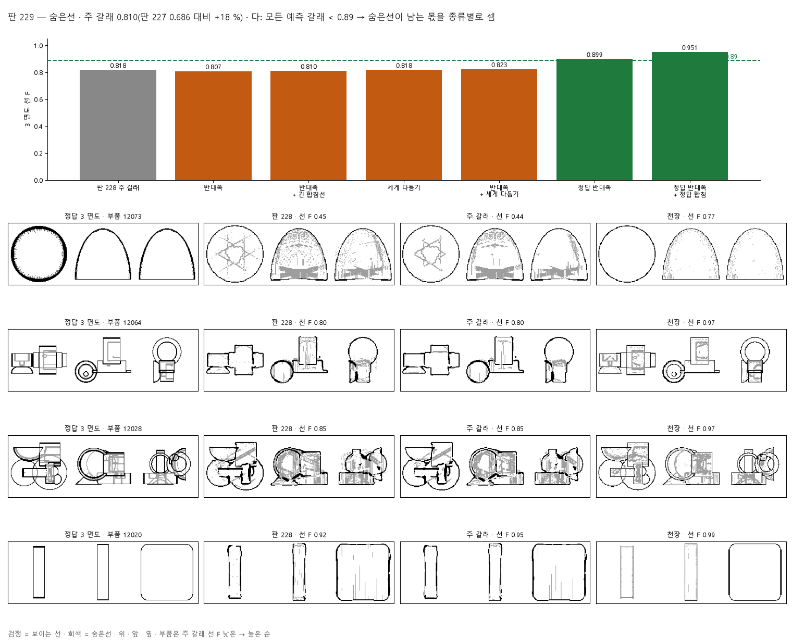

m1_tr0229_h000_숨은선
숨은선을 반대쪽 시점 선 지도와 합친 3D 의 긴 선으로 그리면 예측 3 면도 선 F 가 0.89 에 닿나?
판정 · 다 — 예측 갈래 모두 0.807 ~ 0.823(주 갈래 0.810 · tr228 0.818) · 정답 선 지도 반대쪽 0.899 · + 정답 합침 0.951 · 예측 선 지도 정확도 위 · 앞 · 옆 0.908 · 반대쪽 0.928 → 남은 병목 = 축 시점 선 지도(학습 고도 밖) → 축 시점을 학습 렌더에 넣는 판
결정 표(돌리기 전에 정함)
- 만약 주 갈래 ≥ 0.89
다음 목표 달성 → 원화 → 3 면도 U-Net 판(사용자 계획 · 이 길의 3 면도를 정답 삼아 증류) - 만약 주 갈래 < 0.89 이고 어느 예측 갈래든 ≥ 0.89
다음 그 갈래로 목표 달성(주 갈래가 아님을 적고) → U-Net 판 - 만약 모든 예측 갈래 < 0.89
다음 숨은선이 남는 몫을 종류별로 셈(양쪽에서 다 숨는 안쪽 모서리 · 다듬기 빗금 · 반대쪽 선 오차) → 그 종류를 고치는 판
분석
한 줄로
물음: 숨은선을 반대쪽 시점 선 지도와 합친 3D 의 긴 선으로 그리면 예측 3 면도 선 F 가 0.89 에 닿나?
답: 안 닿는다(결정 표 「다」). 예측 갈래는 모두 0.81 ~ 0.82 로 tr228(0.818)과 같다. 그런데 같은 길을 정답 선 지도로 가면 0.899 로 목표를 넘는다. 남은 차이는 숨은선을 그리는 방법이 아니라, 위 · 앞 · 옆 · 반대쪽 시점에서 예측한 선 지도 자체의 정확도다(정답 선 지도 대비 0.91 · 0.93).
결과(tr182 시험 99 부품 · 3 면도 선 F)

| 갈래 | 3 면도 선 F | 보이는 선 F | 숨은선 F |
|---|---|---|---|
| tr228 주 갈래(숨 = 껍질 다듬기) | 0.818 | 0.884 | 0.380 |
| 반대쪽 시점 선 | 0.807 | 0.884 | 0.207 |
| 반대쪽 + 긴 합침선(주 갈래) | 0.810 | 0.884 | 0.373 |
| 세게 다듬기(100 번) | 0.818 | 0.884 | 0.361 |
| 반대쪽 + 세게 다듬기 | 0.823 | 0.884 | 0.381 |
| 정답 선 지도 · 반대쪽 | 0.899 | 0.985 | 0.336 |
| 정답 선 지도 · 반대쪽 + 정답 합침 | 0.951 | 0.985 | 0.672 |
- 예측 선 지도의 정확도(정답 선 지도 대비 선 F): 위 · 앞 · 옆 0.908 · 반대쪽 0.928.
왜 이렇게 나왔나
확인한 것
- 숨은선 방법을 바꿔서는 0.81 ~ 0.82 에서 안 움직인다. 같은 방법(반대쪽)을 정답 선 지도로 하면 0.899 다. 차이 0.09 는 선 지도가 3 면도 틀에서 얼마나 정확한가에서 온다.
- 축 시점(고도 0 · ±90)은 tr222 · 226 학습 렌더에 없었다(고도 5 ~ 40). 그 시점의 예측 선은 0.91 로, 학습과 같은 시점의 렌더 시험(0.95)보다 낮다.
짐작 (아직 확인 안 함)
- 축 시점을 학습 렌더에 넣으면 그 시점 선 지도가 렌더 시험 수준(0.95)에 다가가, 3 면도가 정답 선 지도 길(0.899)에 다가갈 것이다.
배운 것과 다음
3 면도는 「위 · 앞 · 옆 · 반대쪽 선 지도」 만으로 그릴 수 있고(정답이면 0.899), 남은 병목은 그 시점의 선 지도 정확도다.
- 축 시점(고도 0 · ±90 · 방위 0 · 90 · 180 · 270)을 학습 렌더에 넣어 tr226 망을 다시 배운다 — 그 시점 선 F 와 3 면도 선 F(목표 0.89)를 잰다.
- 지금까지: tr227 기준 0.686 → 0.823(+20 %).
판 기록
- 카드 · 코드 커밋 67883e9(돌리기 전) · 반대쪽 지도 2 분 · 도면 1.5 분 · 판정 잼.json · 그림 그림.png